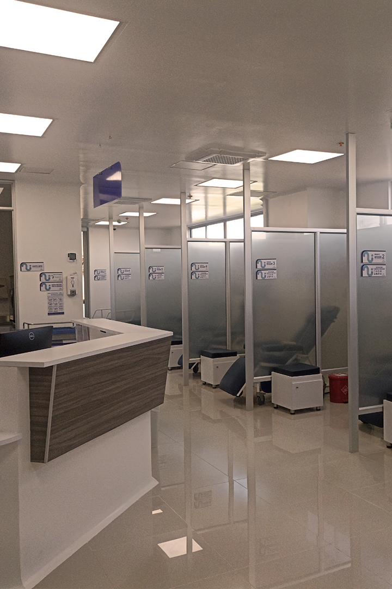

En esta sección encontraras información referente a derechos, deberes y recomendaciones:
DERECHOS
Acceder a los servicios médicos cumpliendo con los trámites administrativos.
Acceder a los servicios y tecnología de salud garantizando una atención oportuna y de alta calidad
Identificar dónde y a quien contactar para interponer una queja, sugerencia o felicitación, recibiendo
una respuesta oportuna por parte de UNIINTEGRAL SAS.
Ser informado sobre los costos por los servicios adquiridos para tu atención en salud.
Acceder a una segunda opinión médica, si así lo deseas.
Contar con servicios continuos y de manera integral.
Derecho a que tu opinión o la de tu representante sea tenida en cuenta para aceptar o rechazar
cualquier tratamiento.
Recibir orientación adecuada, clara y sencilla por parte de los profesionales de la salud acerca de tu
estado, procedimientos y tratamientos que se deban practicar durante la prestación de los servicios.
Derecho a que la información de tu Historia Clínica sea tratada de manera confidencial y sea conocida
por terceros con previa autorización o por casos previstos por la ley.
Recibir un trato respetuoso, digno, cortes y humanizado por parte de los profesionales de la salud,
respetando tus creencias y costumbres.
Ser tratado sin discriminación alguna por sus condiciones de sexo, religión o raza.
Si es una persona en situación de discapacidad, priorizaremos la atención a través de personas
capacitadas para facilitarle el acceso a los servicios.
DEBERES
Cuidar de tu salud
Brindar la información requerida para la atención médica de manera completa y veraz acerca de tu
estado de salud, antecedentes clínicos y contribuir con los gastos según su capacidad económica.
Tratar con respeto al personal que te brinda la atención dentro de las instalaciones de UNIINTEGRAL
SAS, así como respetar la intimidad de los demás usuarios.
Asistir puntualmente a las citas, con documentos en orden e informar con 24 horas de antelación la
cancelación del servicio.
Cumplir de manera responsable con las recomendaciones de los profesionales de salud que te atienden.
Actualizar tus datos personales
Retroalimentarnos a través de los diferentes canales de comunicación y manifestar con respeto tu
experiencia, expectativas y necesidades durante la prestación de servicio

RECOMENDACIONES AL VISITARNOS
Si tiene fiebre por encima de 38 grados centígrados acuda al servicio de urgencias asignado y
comuníquese
con nosotros tan pronto como sea posible para cancelar su cita
Si tiene ardor y/o dolor al orinar acompañado de fiebre, igualmente acuda al servicio de urgencias
asignado.
El día de la administración del medicamento, puedes traer refrigerio y tus medicamentos de uso
habitual si
los ingieres en el horario en el que estarás en tratamiento.
El día de la administración del medicamento, puedes traer una manta si sufres de frío
Mantenga una dieta equilibrada y adecuada. No pierda las ganas de comer.
No tome medicamentos diferentes a los que ya toma y de los que su médico tratante está informado.
Informe cualquier cambio a su médico y a su enfermera.
Es importante que llegue a tiempo a su cita, disponga hacerlo con 20 minutos de anticipación.
Si trae equipos tecnológicos (computadores portátiles, tablets, cámaras, etc.) por favor, registre
en la
portería al momento de su ingreso, ya que la institución no se hace responsable por su pérdida o
hurto.
Solo se permite el ingreso de un acompañante por paciente y este deberá registrarse en recepción
para la
autorización de ingreso.
Debe realizar el lavado de manos siguiendo las instrucciones, como mínimo debe lavarse las manos
cada tres horas.
Permanezca en la Institución usando el tapabocas correcta mente cubriendo nariz y boca.
Por su seguridad y la del medio ambiente, disponga adecuadamente los residuos, verificando en la
tapa de cada
contenedor los elementos que se pueden desechar en el mismo.
Cuando haga uso del celular, mantenga un tono de voz adecuado y distante de áreas donde se encuentra
alta
afluencia de pacientes.
Es su deber solicitar con tiempo su cita de control y tener la autorización de su asegurador vigente
al
momento de su cita.